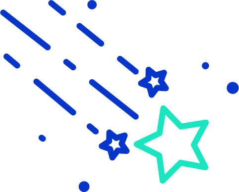
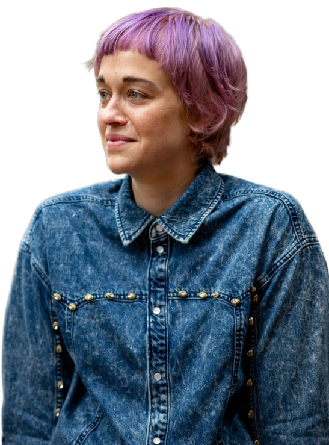

Hello! I'm Lauren Trimble.


ABOUT ME
I'm a recent student from the University of Michigan's School of Information. I work at Deque as an accessibility consultant. My focus is User Research and building equitable information systems
(specifically providing voters with clear, actionable information about their ballots).
I'm also web accessibility expert (IAAP certified CPACC)
who gave product assessments and pre-production conformance advice (WCAG 2.0, 2.1 and Section 508) to clients and companies I worked for.
My background is in customer experience and user-centered design with a smattering of trade publishing and creative writing.
EXPERIENCE
Deque
Accessibility Consultant (2019 - Present)
Hiatus taken for graduate program from December 2019 to February 2021
Citizen Interaction Design (University of Michigan)
Summer Fellow (2020)
JSTOR & Artstor (ITHAKA)
Integration and Engagement Services Lead (2018)
User Advocacy and Accessibility Specialist (2015 - 2018)
Website Support Specialist (2013 - 2015)
Bloomsbury Publishing (London, UK)
Marketing Assistant (2011 - 2012)
JET Program (Hamada, Japan)
Assistant Language Teacher (2007 - 2009)
EDUCATION
University of Michigan
Master of Science in Information
(UX Research and Design) (2021)
Full Tuition Scholarship: School of Information
Royal Holloway, University of London
Master of Arts in Creative Writing (2010)
Kalamazoo College
Bachelor of Arts in History & Women’s Studies (2007)
L’Ecole Supérieure de Commerce de Clermont-Ferrand
Visiting Student (2006)